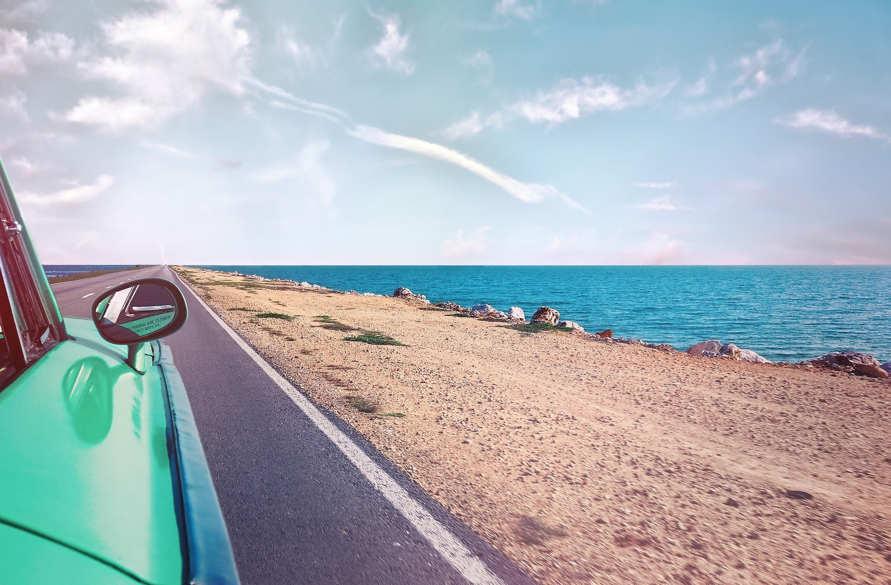

Welcome to Basura!
- Top
- About
- Culture
- Gallery
- References
About
Basura was quickly inhabited once discovered to preserve the natural wonders of the land. Basura began as a large empty island full of beaches, tropical views, and flat land. Development on the flat land quickly took off as the land was discovered to be a prime foundation for a large city amongst the many natural wonders of Basura. The primary focus was to establish a city for the first adopters to live in, and then safe accessibe paths to access the wonders of the country.
With millions of visitors annually in 2051, Basura attempts to keep the land and its treasures preserved, while also displaying them to the many tourists and citizens that live in this wonderful place.
Basura's Main Industries
1) Farming
Basura's main industry is farming! Producing 100 tons of produce a year, Basura is home to many large farms that help power the country. After many years of development, Basura has become a farming giant that grows many different goods for export or local consumption around the island.2) Tourism
Basura being one of the best vacation destinations, tourism has become another major industry that brings in a million tourists a year! Tropical beaches, perfect weather, and amazing views, Basura has quickly climbed the ladder to become one of the most popular destinations in the world!3) Financial
The financial industry is a third major industry among the country of Basura. Allowing outsiders to store their valuable goods on the island, Basura is able to safely house many different valuables for others to store. Keeping over $5 Trillion in goods from outsiders, Basura is able to provide a financial storage service for people around the world to enjoy.Basura's Main Exported Goods
1) Gold
Basura was discovered to contain a great mining location containing many of the world's most desirable minerals and metals beneath the surface. Gold was found to be plentiful and used for export, as many countries have a strong desire for such material. Basura has slowly mined and sold its large supply of gold over the years.2) Wheat
Basura also being a prime location for growing crops, wheat has become a large amount of our exports. With plenty of space to grow, we export vast amounts of wheat to other countries all over the world.3) Iron Ore
As mentioned, Basura is prime mining location. Iron ore is a second common metal that is found in the mines beneah Basura. Plenty of ore to go around, we export any unnecessary extra iron ore.Basura's Main Mode of Transportation
1) Car
Basura and its many amazing locations around the island can be easily accessible via cars! There are many paved roads to lead you around the island and to the many stops that visitor or citizens want to check out. With many nice roads near the water, the views can be breathtaking!2) Train
A second amazing method of transportation is the train! Basura contains a railway system to allow everyone to travel the island while sightseeing at the same time. Passing through the forests and mountains, riders get to travel around the island while taking in the breathtaking views.Culture
Basura's 3 Most Popular Dishes
1) Nachos
Basura grows plenty of crops, so we've grown to make dishes using locally sourced foods from around the island. Containing locally made tortillas, cheese, avocados, and other toppings grown from around the island, it provides a tasty meal for any hungry person.2) Spaghetti
Basura grows plenty of wheat that is both used for food within the country and for export. Wheat can be used for many diffrent foods, spaghetti and pasta being one of them. In combination with the tomato farms, we are able to create an amazing spaghetti dish for everyone to enjoy.3) Ice Cream
Farms also contain space for animals such as cows to produce milk. The milk can be used to produce treats such as ice cream, an amazing cold dessert for the warm weather.Basura's Activities
1) Sightseeing
With so many destinations around the island, you are able tour the island any way you want! Through train or car, you are able to view the tall mountains, lucious forests and blue oceans around the island.2) Swimming
With Basura being an island, you are able to access the beaches to enjoy the water and swim. Basura has many amazing beaches for everyone around to enjoy.3) Fireworks & Festivals
Festivals happen occasionly on Basura as a celebration to bring people together. Festivals have many attractions and activities to partake in. Everyone has a great time every time a festival occurs. Fireworks are also a large part of the festival as at the end of the day a large firework show is displayed.
Gallery

Calm Ocean Drives
Firework Festival
References
kermit
beach
ocean beach car
airplane
fireworks
city highrise
train
kermit handbag
Nacho
beach swimming
mountain
Flag afphoto: flag.afphoto